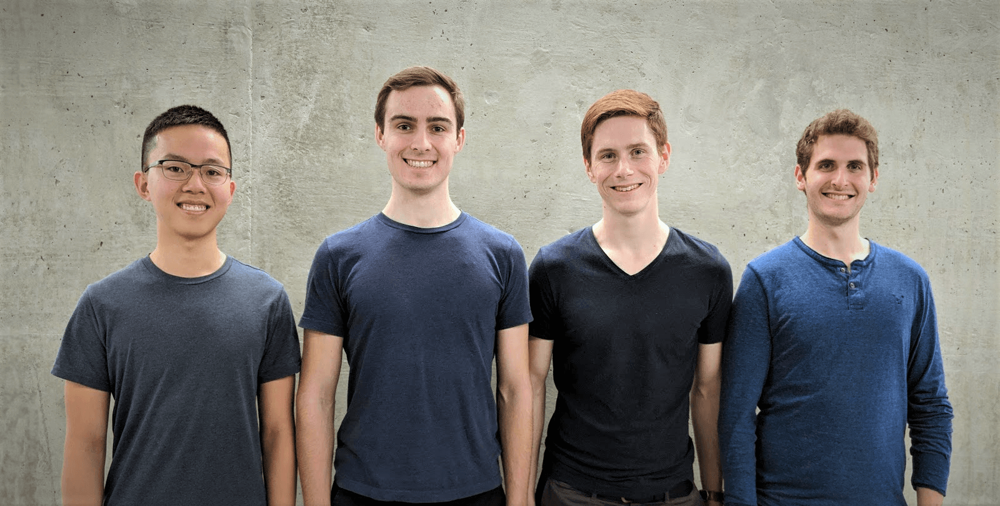

Team Photo: Daniel Zhou, Jake Fisher, Colin Cooke, and Michael Jonas (left to right).

Daniel one of Atlas Medical's electrical designers. He focuses on PCB design and fabrication while aiding sensor interface design and PCB assembly

Jake is the project manager for Atlas Medical and the lead firmware developer. Jake tracks deliverables for the team while ensuring that everyone has the resources they need to move forward. In addition Jake's background in firmware development enables him to lead the firmware development for the project.
Colin is the lead software developer for Atlas Medical while also leading pneumatics design and fabrication. Colin will be developing the analysis software used to extract insights from the full-body sensor matrix.

Michael is Atlas Medical's second electrical designer. Michael works primarly upon sensor design while assisting with PCB design.
Team Photo: Daniel Zhou, Jake Fisher, Colin Cooke, and Michael Jonas (left to right).